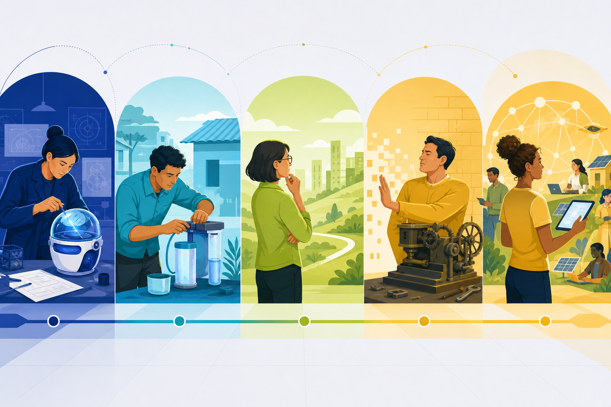

Contextual case
Connect the concept
Case connection: Greenviro Global can be discussed as innovative, environmentally oriented and locally grounded; one venture may fit more than one defensible classification.
I.3 · CO1 · K2
Classifications help us compare entrepreneurial responses to change; real entrepreneurs may shift type as evidence, resources and markets evolve.

Explore the model
Use the controls to inspect each idea. Visited controls remain marked during this page visit.
Create new combinations
Introduces a new product, process, market or business combination. The category depends on meaningful novelty and implementation—not on using the word innovation in a pitch.
Adapt what works
Adopts a proven idea and modifies it for local customers, cost structures, regulations or delivery conditions. Adaptation can create substantial value without being a world-first invention.
Change cautiously
Responds to change only after clear pressure or convincing evidence. Caution can limit waste, but excessive delay can surrender customers and learning opportunities.
Resist necessary change
Continues an established method even when the market clearly demands change. The defining feature is persistent resistance despite evidence, not simply operating a traditional business.
Classify by purpose and scale
Social, technology, scalable-startup and small-business entrepreneurship classify ventures through mission, innovation and growth logic. Case: Classify Greenviro Global using two valid lenses and justify both.
Contextual case
Case connection: Greenviro Global can be discussed as innovative, environmentally oriented and locally grounded; one venture may fit more than one defensible classification.
Misconception watch
Common mistake: Treating entrepreneur types as permanent personality labels or assuming imitative entrepreneurship has no innovation.
Ungraded self-check
Classify a local service or manufacturing venture using both a functional type and a modern form.
This is formative feedback only; no answer or score is stored.
Storyline Web edition
The accessible web interaction above is ready. A published Storyline edition will appear here after its complete Web output is staged in this folder.
Alignment: CO1 - Discuss the fundamentals of entrepreneurship; K2 - Understand.
Functional and modern classifications, case and cautions
Innovative, imitative, Fabian and drone classifications
Activity- and ownership-based classifications
Template credit: Sidebar tabs interaction template by David
Visible instructional text is paraphrased from the supplied study material and designated references.